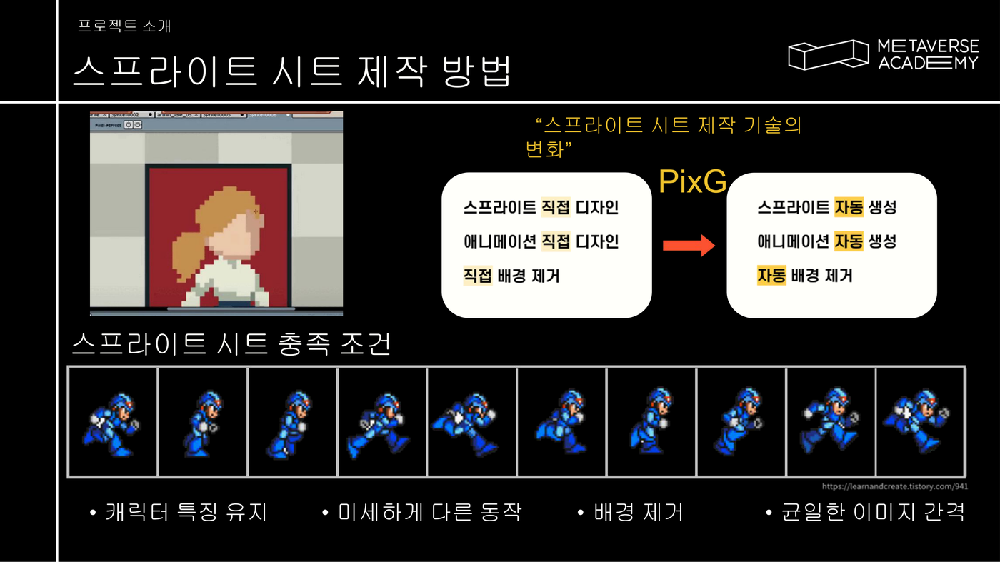
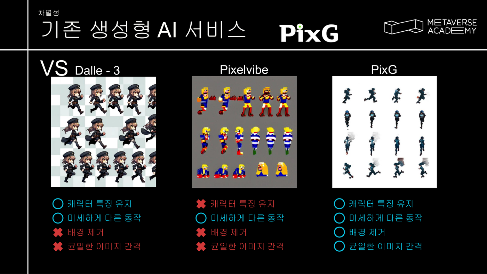
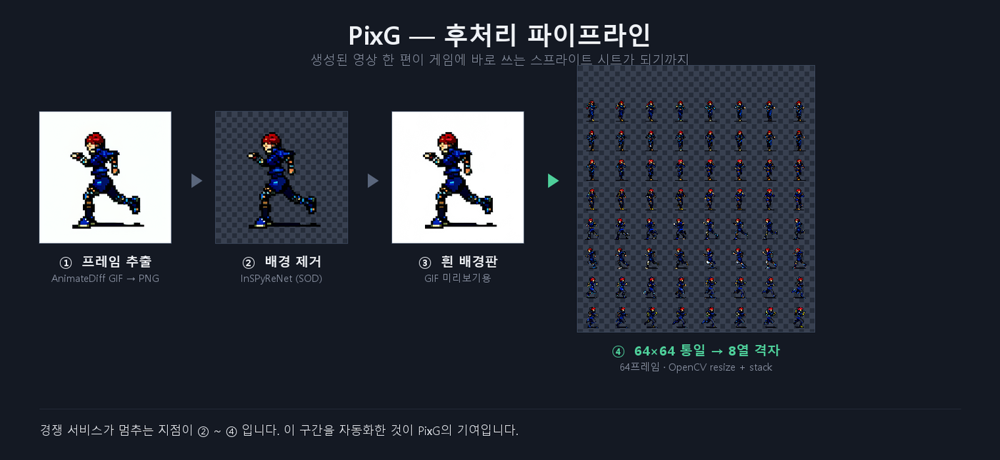
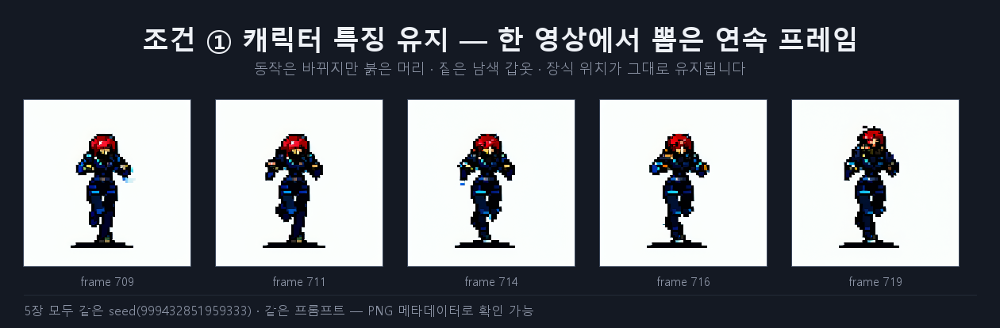
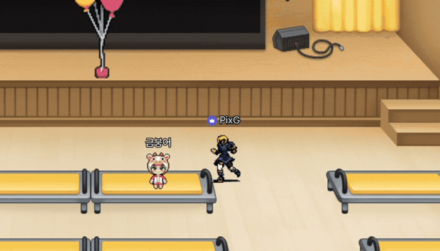
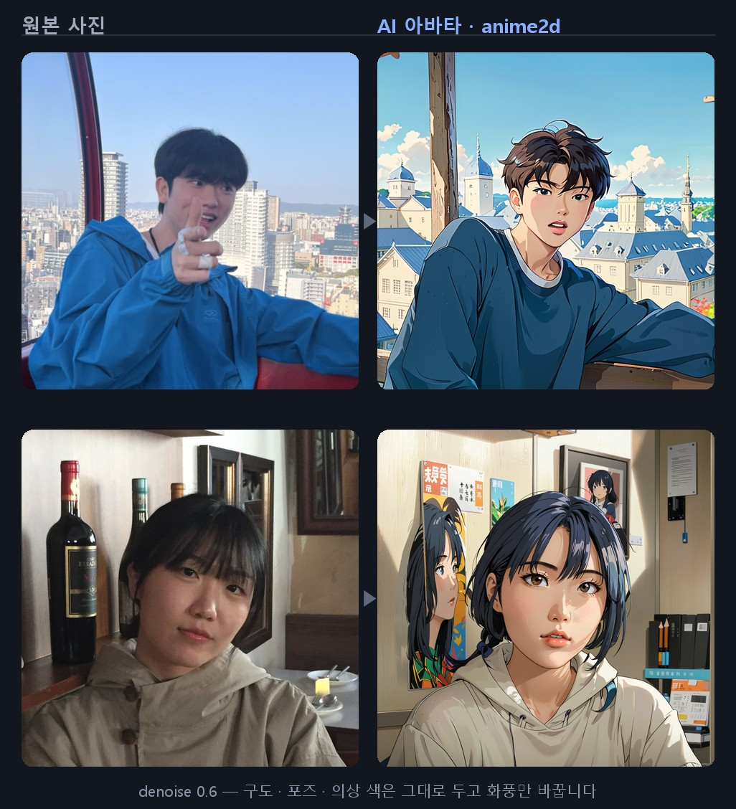

생성 AI 직무에 해당하는 작업만 모은 페이지입니다. 전체 포트폴리오에는 백엔드·NLP 프로젝트도 있지만, 여기서는 모델·툴 비교 실험 · 생성 파이프라인 설계 · 워크플로우 자동화 세 가지만 다룹니다. 프로젝트 단위로 묶었고, 각 항목이 직무 요건 ①②③ 중 무엇에 해당하는지 표시했습니다.
아래 ①②③은 직무 요건 순서로 묶은 것입니다. 각 항목에 이 세 작업이 나눠 들어갑니다.
프롬프트 한 줄로 게임에 바로 넣는 픽셀 스프라이트 시트를 만드는 서비스. 생성형 AI가 「픽셀 느낌의 이미지」에서 멈추는 지점 뒤를 자동화했습니다.
AI 아바타로 얼굴을 가리고 성향으로 사람을 연결하는 소개팅 서비스. 사용자가 올린 사진을 지브리 화풍 아바타로 바꾸는 부분을 맡았습니다.
클라이언트가 자사 캐릭터를 주고 「비슷한 캐릭터를 AI로 만들어 달라」고 한 과제. 이 포트폴리오에서 이미지 생성 모델을 직접 학습한 유일한 사례입니다.
탈락한 과제를 넣은 이유 — 결과는 떨어졌지만 모델을 직접 학습해 본 경험은 이것뿐입니다. 있었던 일을 있는 대로 적는 편이 직무 요건과 대조하기에도 정확하다고 판단했습니다.
| ① 모델·툴 실험·비교·활용 | PixG 기준 정의Blind Dating 17종Bigglez 접근 4가지 |
| ② 생성 파이프라인 설계 | PixG 후처리 4단계Blind Dating ComfyUI 5단계 |
| ③ 워크플로우 자동화 | PixG 후처리 스크립트Blind Dating 작업 큐·워커 |
메타버스 아카데미 2기 최종 프로젝트 · 2023.09.18 ~ 11.27 · 5인 · 최우수상
생성형 AI가 「픽셀 느낌의 이미지」에서 멈추는 지점 뒤를 자동화했습니다. 기준을 정하고 → 파이프라인을 만들고 → 자동화하고 → 실제 게임에 넣어 확인한 순서로 적었습니다.
「픽셀 느낌의 이미지」를 목표로 두면 언제 끝났다고 할지 알 수 없었습니다. 그래서 게임 엔진이 실제로 읽을 수 있는가를 기준으로 조건 4개를 먼저 못박았습니다.


| 구간 | 설정 |
|---|---|
| 베이스 | Stable Diffusion 1.5 + 픽셀아트 LoRA · CLIP skip -2 |
| 동작 생성 | AnimateDiff animatediffMotion_v15V2 ·
context_length 16 · steps 20 / cfg 8 |
| 자세 제어 | ControlNet 2종 — OpenPose 1.0 + Depth 0.2 |
| 환경 | 개인 RTX 3060 6GB / 아카데미 RTX 4090 24GB |
OpenPose를 1.0으로 강하게 걸어 동작을 확정하고, Depth는 0.2로 약하게만 얹어 입체감만 보조하도록 역할을 나눴습니다. Depth를 올리면 픽셀아트 특유의 납작한 화풍이 무너집니다.

생성된 프레임을 사람이 손대지 않고 게임 엔진이 바로 읽는 에셋으로 바꾸는 구간입니다. 배경 제거 · 화질 복원 · 규격 통일 · 격자 배치가 한 번에 돕니다.

프롬프트 입력 → 생성 → 다운로드까지의 실제 화면.
yellow hair, blue shirts, blue pants 한 줄을 넣으면
달리기 사이클 스프라이트 시트가 배경까지 처리된 상태로 나옵니다.
생성 결과 갤러리 — 프롬프트와 결과물이 함께 보관됩니다.

삼성 청년 SW AI 아카데미 15기 1학기 관통 프로젝트 · 2026.05 ~ 06 · 5주 · 2인 · 24커밋 중 21커밋
사용자가 올린 사진을 지브리 화풍 아바타로 바꾸는 부분을 맡았습니다. 모델을 고르고 → 파이프라인을 짜고 → 나흘간 다시 돌리고 → GPU 서버를 붙인 순서입니다.
| 항목 | 비교와 결정 |
|---|---|
| 체크포인트 | 13종 (약 59GB) 비교 → 운영 dreamshaperXL_lightningDPMSDEJuggernaut-XL v9가 정체성 유지에 유리했지만 생성 시간이 길어 저스텝 계열로 교체했습니다 |
| 스타일 LoRA | 지브리 4종 A/B 비교 → giblylast 채택Ghibli_xl_v2는 스타일이 강하나 얼굴 왜곡, ghibli_style_offset은 변환 강도 부족 |
| 정체성 유지 | IP-Adapter FaceID Plus V2 (SDXL) + InsightFace buffalo_l |
| 얼굴 복원 | face_yolov8m + SAM vit_b · 업스케일 4x-UltraSharp |
가중치 총합 약 69GB는 저장소에 넣지 않고
models/manifest.json + 다운로드 스크립트로 환경을 재구성할 수 있게 했습니다.
단계마다 쓴 모델·파라미터와 그렇게 정한 이유
IPAdapter와 LoRA의 weight를 따로 조정했습니다. 정체성을 잡는 IPAdapter와 화풍을 입히는 LoRA가 같은 샘플링 안에서 서로를 상쇄하기 때문입니다. 한쪽을 올리면 다른 쪽이 묻혀서, 두 값을 하나로 묶지 않고 스타일마다 균형점을 다시 찾았습니다. 6/17 08:56에 IPAdapter를 2단으로 분리한 것도 같은 이유입니다 (아래 실험 이력).
위 5단계를 이 값으로 굳히기까지, 아바타 품질을 잡으려고 나흘 동안 워크플로우 12개를 저장해가며 돌렸습니다. 아래는 그 원본 파일에서 뽑은 실제 변경 이력입니다.
| 시각 | 무엇을 바꿨나 | 왜 |
|---|---|---|
| 6/14 18:52 | Efficient KSampler 계열 | 노드 수를 줄여 반복 속도를 높여보려는 시도. 채택하지 않음 |
| 6/14 19:27 | 출발점 | Juggernaut-XL v9 · ghibli_style_offset 1.0 · euler/simple · steps 20 · cfg 8 · denoise 1 |
| 6/14 19:39 | denoise 1 → 0.4 | txt2img로는 원본 구도가 사라졌습니다. img2img로 전환한 지점 |
| 6/16 10:44 | LoRA 3개 적층 | 같은 LoRA를 겹쳐 스타일 강도를 올려봄 |
| 6/16 11:01 | LoRA 교체 · 샘플러 교체 | ghibli_style_offset → giblylasteuler/simple → dpmpp_2m_sde/karras · steps 30 · cfg 6.3 · IPAdapter 1.0 → 0.4 |
| 6/16 11:11 | 동일 설정 재실행 | 시드를 바꿔 재현성 확인 |
| 6/17 07:38 | steps 35 · cfg 5.5 · denoise 0.7 | 스타일을 더 밀어봄 → 인물이 바뀌기 시작 |
| 6/17 07:40 | ⭐ FaceDetailer 도입 | 얼굴만 잘라 재생성. LoRA 1.0 → 0.9 · IPAdapter 0.4 → 0.75 · denoise 0.6 |
| 6/17 08:56 | IPAdapter 2단 분리 | 정체성용 0.75 · 보조 0.6 — 가중치를 하나로 묶지 않고 나눔 |
| 6/17 09:30 | 업스케일 단계 추가 | 4x-UltraSharp 를 파이프라인 끝에 연결 |
| 6/17 10:53 | FaceDetailer guide 512 → 768 | 512에서는 눈·입이 여전히 뭉갰습니다. 최종 운영값 |
| 6/17 10:59 | 애니 스타일 분기 | animagine-xl-4.0 + cute-anime 0.7 — 같은 구조에 스타일만 교체되는지 검증 |
📂 왼쪽 시각을 누르면 그 시점의 ComfyUI 워크플로우 원본(JSON)이 열립니다. 12개 전부 올려두었습니다 — 내려받아 ComfyUI에 넣으면 그대로 실행됩니다.
운영 배포본은 여기서 체크포인트를 한 번 더 바꾼 것입니다 — Juggernaut-XL v9 → DreamShaper XL Lightning. 품질은 Juggernaut가 좋았지만 사용자 대기 시간을 줄이는 쪽을 골랐습니다.
GPU 예산이 없어 사설망 개인 머신을 써야 했습니다. 인바운드 포트를 열 수 없어, 서버가 GPU를 호출하는 대신 GPU 워커가 백엔드를 폴링해 작업을 선점하는 방향으로 바꿨습니다.
ordering = ['created_at']/health · /config호출 방향을 뒤집어(pull) 인바운드 포트 없이 동작하는 생성 서버
| 구성 | 내용 |
|---|---|
| 작업 큐 | AIJob 테이블을 큐로 설계 — FIFO · 상태 머신 · 실패 사유 전달 |
| 워커 | 백엔드 폴링 → 작업 선점 → ComfyUI HTTP 호출 → 결과 전송 · 타임아웃과 예외 처리 |
| 헬스체크 | FastAPI /health — 워커 스레드와 ComfyUI 연결을 동시에 확인 |
| 대기 흡수 | 생성 시간을 줄일 수 없다고 판단하고, 설문 21문항을 대기 구간에 겹쳐 배치해 체감 대기를 사실상 0으로 만들었습니다 |
Celery를 일부러 쓰지 않았습니다. DB 테이블 하나로 FIFO·상태 머신·실패 사유 전달이 충족되는지 확인한 뒤, 5주 일정에서는 브로커 운영 비용이 더 크다고 판단했습니다. 대가(원자적 선점 부재)와 개선 방향도 함께 문서로 남겼습니다.

denoise 0.6)2024년 12월, 한 회사의 채용 과제로 받은 작업입니다. 클라이언트가 자사 캐릭터를 주고 「비슷한 캐릭터를 AI로 만들어 달라」고 요청했습니다. 나흘간 진행하고 26쪽짜리 작업 기록을 함께 제출했습니다.
바로 만들지 않고 가능한 접근 4가지를 먼저 정리한 뒤 골랐습니다.
| 접근 | 판단 |
|---|---|
| LoRA 학습 | 학습 데이터가 20장 이하 → 증강으로 보완해 진행 ✅ |
| DreamBooth 파인튜닝 | 적은 이미지로 특정 캐릭터를 학습하는 방법. 자원·시간 대비 LoRA를 우선 |
| 프롬프트만 | 먼저 돌려 도달 가능한 품질의 기준선을 확인하는 용도로 사용 |
| IP-Adapter · ReActor · InstantID | 얼굴 복제 계열 3종. 「원본과 충분히 유사한가」라는 1번 목표를 위해 적용 ✅ |
| 단계 | 판단 |
|---|---|
| 포맷 | JPG 대신 PNG — 손실 압축을 피하고 배경 투명화가 가능해서 |
| 해상도 | 1024×1024 — SD 1.5는 512, SDXL은 1024로 학습된 경우가 많아 XL 기준으로 맞춤 |
| 배경 제거 | rembg·GrabCut을 쓰지 않고 직접 처리 — 장수가 적고 품질이 결과를 좌우한다고 판단 |
| 태그 | WD14 Tagger 2종을 비교했으나 둘 다 불만족 → 자동 태그와 직접 정리한 태그를 합산해 사용 |
| 증강 | 14장뿐이라 증강. 다만 회전·반전 수준으로 제한 — 과하면 원본 특징을 잃어 오히려 해가 된다고 판단 |
ComfyUI 내장 학습 노드는 CUDA 버전이 맞지 않아 실패했고,
kohya_ss 로 전환한 뒤에도 문제가 이어졌습니다.
| 증상 | 처리 |
|---|---|
| torch · cuDNN 버전 충돌 | Python 3.12 제거 → 3.10 재설치, CUDA·cuDNN 버전 교체 |
| 가상환경이 겹침 | kohya_ss 가 자체 venv 를 만들어 conda 환경과 충돌하는 것을 확인 |
| 파라미터 개수 에러 | 같은 증상의 GitHub 이슈를 찾아 확인 후 v24.1.4로 롤백 |
num_samples=0 |
데이터셋을 못 찾는 에러. 해상도를 512로 낮춰도 동일 → 폴더 구조와 로그·모델 경로를 분리해 해결 |
| 회차 | 바꾼 것과 결과 |
|---|---|
| 1차 | 기본 설정으로 학습 → SDXL base와 revAnimated 로 생성 비교.
원본 특징은 잃었지만 방향은 맞음 |
| 2차 | 태그 수정 + 파라미터 조정 → 원본과 가까워짐 |
| 3차 | 데이터 증강 후 태그 재생성·재학습 |
| 추가 | 효과 |
|---|---|
| IP-Adapter (SD 1.5) | 미적용본과 나란히 비교 — 원본을 확연히 더 따라감 |
| Comfyroll 커스텀 노드 | 스위치로 LoRA를 켜고 끄며 기여도를 분리해 확인 |
| 네거티브 프롬프트 가중치 | (word:strength) 형식으로 억제 강도를 개별 조정 |
| ControlNet (canny) | 원본과 매우 가까워진 지점. 자세를 고정해 정면·측면을 따로 생성 |
| 체크포인트 교체 | AnythingElse V4 로 바꿔 캐릭터 화풍에 더 맞춤 |